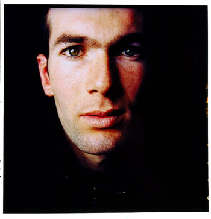

Forums galactiques > Taverne galactique : lieu de discussion informel > Coups de geule total (hrp)
| Blackwarrior Réputation à la taverne : 476  09/07 ETU 22:52 | Score : 0 Détails bon, je sais que je suis pas le plus riche, mais je donne 50 ma de leems à toute personne me disant que les italiens ont triché/sont des mauvais joueurs en argumentant!!
et je veux aussi des hypothèses sur ce qu'à dis l'italien (chais plus son nom :s) à Zidane pour qu'il lui mette un coup de boule.... merci!! | ||
| trantor Réputation à la taverne : 47  09/07 ETU 22:56 | Score : 0 Détails L'Italien avait demandé un autographe à Zidane, il lui à donné !
| ||
| Blackwarrior Réputation à la taverne : 476 09/07 ETU 22:59 | Score : 0 Détails mouais, ça ça vaut pas 50 Ma ^^
je t'en donne 25 aller :P aller aller je veux vos commentaires!! non mais franchement, moi je suis italien, mais là c'est abusé comment ils ont trop triché!! | ||
| Booster Réputation à la taverne : 1494  09/07 ETU 23:04  | Score : 0 Détails L'Italie ? Serait-ce un nouvel état galactique ? En quoi ont-ils triché et où ? Et qui est ce Zidane ? Un nouveau commandant ? Le cas échéant, il pourra recevoir son pack d'aide auprès du Baron, mais sachez qu'Hotfoot étant absent, il ne peut plus délibérer son Hotfoot's Starter Pack...
HRP : Un peu de HRP de temps en temps, soit, mais là je dis STOP ! | ||
| Sanji Réputation à la taverne : 69  09/07 ETU 23:05 | Score : 0 Détails Le jeune Sanji passe par là et s'arrete devant le monsieur en train de s'époumoner.
"Des sous ? Je veux bien... Alors les Hitaloniens ont triché à la bataille de Arcana Prime en utilisant des armes prohibées de nature hyperohyperatomique... Comme tout le monde le sait, ces armes sont interdites depuis la huitième guerre drosienne où les Drosiens qui sont en fait de petits écureuils carnassiers qui assaillirent leur ennemis avec des noisettes suceuses de sang... Le massacre fut terrible et les Drosiens pensèrent avoir gagné quand leurs adversaires les Zipopalalatiens ont utilisé l'Arme Supreme, le gaz hilarant Hyperohyperatomique ! La planète elle meme perit de rire..." HRP // tout ça pour dire que l'on s'en tape de ton foot, tu veux faire mumuse, créer toi un blog, ou vas sur l'externe ici c'est du RP point.... T'as meme pas chercher a mettre en forme de manière vaguement RP... ça a un nom ce genre de mecs qui savent pas faire la fdifférence RP/HRP... Comment dit on déjà ? Ah oui des boulays ! MARRE DU HRP EDIT : 'tain si meme notre paysan s'y met... v_v Espérance est perdue | ||
| Arthérius Réputation à la taverne : 1559  09/07 ETU 23:05 | Score : 0 Détails Moi j'ai peut etre une explication ...
Au début il y a accrochage de maillot, mais les deux joueurs se sont séparés copains ... Zidane en repartant lui a fait signe de pas recommencer, et je crois bien que l'Italien lui a laché une petite insulte en italien : f**** ** p*** , avec une bonne petite censure, d'apres le mouvement des levres ... ( encore que le ralenti n'était pas vraiment éloquent) ! Voila ma théorie ! ET MAINTENANT PLUS DE HRP !!! Edit : le paysan répond mais ne veut plus de HRP et le demande précisément ... | ||
| Blackwarrior Réputation à la taverne : 476 09/07 ETU 23:09 | Score : 0 Détails Ok, j'ai fait une bourde je le reconnais... pardon pour ce HRP, laissez couler ce topic svp...
Arth: tu mérite bien plus que 50 Ma pour cette brillante culture de la langue italienne, galactiquement connu pour sa mélodie chantante (surtout pour les insultes ;) ) | ||
| Arthérius Réputation à la taverne : 1559 09/07 ETU 23:12 | Score : 0 Détails Euh , je profite de ce petit HRP pour demander à tous ce qu'est le "pense bete" qui apparait a l'ecran principal de controle ?
| ||
| Booster Réputation à la taverne : 1494 09/07 ETU 23:13 | Score : 0 Détails J'ai fait la demande sur l'externe d'instaurer ce petit espace bien pratique (surtout lorsqu'on est guildien et qu'on passe tout plein de commandes !) où on peut prendre des notes afin de se souvenir de tout ! :D
| ||
| Blackwarrior Réputation à la taverne : 476 09/07 ETU 23:17 | Score : 0 Détails heureusement que j'ai demandé de laisser couler cette salle...elle est emplie de chose dont les initiales sont H,R et P, et j'ai compris à mes depends qu'elles ne sont pas tolérées ici, alors laissez cette salle au fond svp...
| ||
| Zinédine Zidane Réputation à la taverne : 0  10/07 ETU 00:19 | Score : 0 Détails Les italiens on trichés je suis tout à fait d'accord :)
| ||
| Kyle Emagan Réputation à la taverne : 1309  10/07 ETU 00:45 | Score : 0 Détails Lol, et puis, on aurai du avoir un second penalty en seconde mi temps... m'enfin... marquer sur deux penalty ca n'aurai aps été une très belle victoire... On notera tout de meme que pedre au tirs au but, c'est encore une moins belle victoire ;)
Sinon, il est certain que l'Italien en l'insultant n'a du chercher que ça, connaissant le caractère de Zidane... M'enfin... je tiens quand meme a preciser que Zizou n'aurait rien eu sans ce 4eme arbitre... Et que de plus, le quatrieme arbitre qui vois les fautes de jugement de l'arbitre ne les lui fait jamais remarqué... Sinon il y'aurai eu un meilleur arbitrage durant cette coupe du monde.... Enfin bref, on a perdu sur des tirs aux buts... Il faut se dire que c'est la moins pire defaite ;) | ||
| Wolverine Réputation à la taverne : 2271  10/07 ETU 09:28 | Score : 0 Détails Arthé, un pense-bête, ça sert à deux choses :
1) à faire penser les idiots (d'où son nom) 2) à nourrir une discussion HRP | ||
| Atheos Réputation à la taverne : 133  10/07 ETU 09:34 | Score : 0 Détails Je vais inventer un jeu.
A la taverne ou à L'ag, le premier qui fait un HRP, le premier qui pourri le groove, je le pourri ! Je ne rigole pas, y'en a marre de tout ces Boulets qui savent pas faire du RP. Je tiens plus. | ||
| Seb-RW Réputation à la taverne : 74  10/07 ETU 11:06 | Score : 0 Détails Up ^_^
(Juste pour le dernier message) | ||
| Kyle Emagan Réputation à la taverne : 1309 10/07 ETU 12:06 | Score : 0 Détails Bah avec tout ce rp.... Autant faire un peu de Hrp de temps en temps non? ^^ (je sens que tlm va me gueuler dessus mtnt que j'ai dit ça...avec un long discours sur comment il faut être...)
| ||
| Général_Louis Réputation à la taverne : 1323  10/07 ETU 13:45 | Score : 0 Détails Les Italiens n'ont fait que d'être mauvais joueur, Tacle par derrière, coup de pied et autres. Ils se jètent même par terre quand ils ne se fint pas touché. Les Italiens font même la comédie quand ils gagnent, on dirait qu'ils sont au cinéma.
Bref, de mauvais joueur. Et pour le coup de Zidane, je pense que l'Italien l'a insulté ( rascime ou autres) et Zidane pour régler ses comptes, lui a donné un coup de boule. | ||
| Hecate de Lunargent Réputation à la taverne : 293  10/07 ETU 13:54 | Score : 0 Détails Qui eu put dire que la final d'un jeu aussi grotesque intéresserait autant de personnes des milliers d'années après... (HRP ouai allez j'essai de ratraper un peu le truc ^^)
| ||
| Atheos Réputation à la taverne : 133 10/07 ETU 14:00 | Score : 0 Détails Louis, t'es mort !
| ||
| Général_Louis Réputation à la taverne : 1323 10/07 ETU 14:12 | Score : 0 Détails "Mon Atheos, je m'excuse d'avoir dit une connerie. Ausi, accepte toutes mes excuses très sincères. S'il te plait Atheos, veuille bien m'excuser, erreur de jeunès comprends-tu?"
|
Forums galactiques > Taverne galactique : lieu de discussion informel > Coups de geule total (hrp)